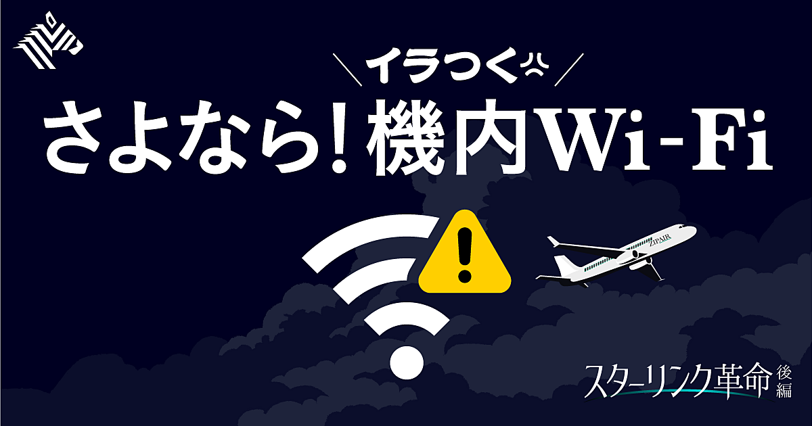
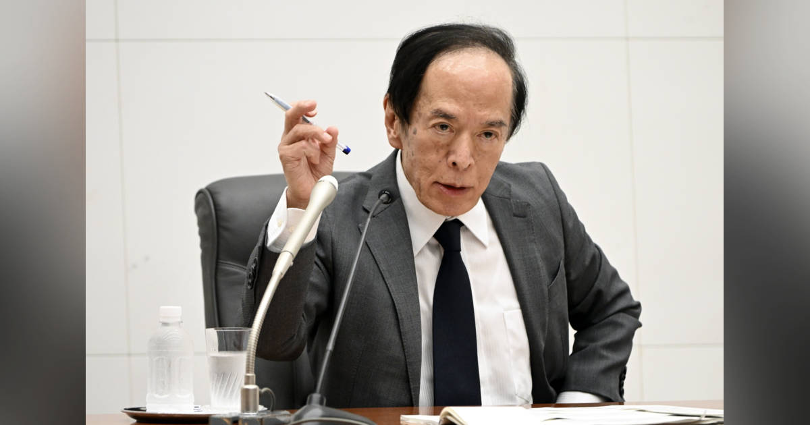
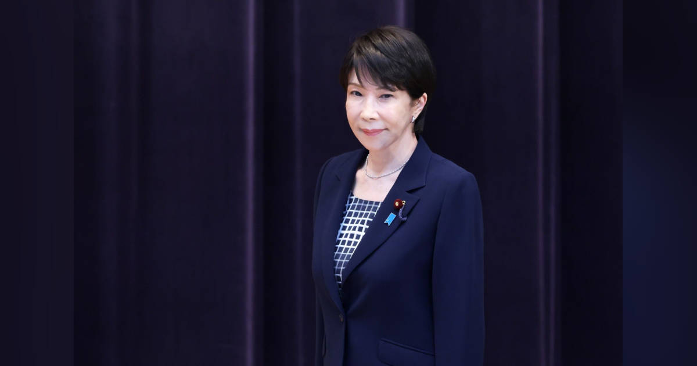

01
【新連載】賢人たちは、すでに「AIの先」を見ている
発行日時：2026年9月17日 05:30 JST ・ NewsPicks編集部
あなたに関係ありそうな理由
AI投資の熱量を追うだけでなく、次の波を見極める時間差と、過度な期待を避ける視点を持てるためです。
概要
記事は、AIへの投資熱が最高潮にある今こそ、その次に何が育つかを考える新連載の出発点として書かれている。SpaceXによるxAI買収やCursorの急成長など、生成AIをめぐる話題が連日続く一方、2026年上期の米国ベンチャー投資の86％がAIに向かったという数字も紹介する。しかし熱狂の中で「次」を見つけることは難しい。記事は、1999年末の高値で買ったAmazon株が回復するまで約10年を要した例を挙げ、優れた技術と投資リターンの時期は同じではないと注意を促す。Sequoiaの分析では、ある領域が大きく注目を集めた年と、その領域で成功する企業が創業される時期には約5年のずれがあったという。暗号資産が注目された後の2021年にAnthropicが生まれたように、次の機会は人々が今見ている場所の少し外側にある。記事が候補として紹介するのは海底ケーブルの安全保障だ。世界のインターネット通信の99％、一日当たり1,500兆円規模の金融取引が通り、巨大IT企業が敷設容量の75％を保有する一方で、修理船は世界に約60隻しかない。AIのモデルやチップだけでなく、通信、電力、物理的な防御といった基盤に目を向ける理由がここにある。表示コメントでも、フィジカルAI、世界モデル、現場データ、セキュリティ、電力が次の重要領域になり得るという見立てと、技術革新の速度より社会実装の方が遅いという指摘が並んだ。記事の要点は予言を当てることではない。熱狂の最中に、何がすでに織り込まれ、何がまだ過小評価されているのかを、需要・供給・時間軸の三つで考え直すことにある。AIの成長を前提にしつつも、どの企業や領域にどれだけの期待がすでに価格へ入っているかを別に見る姿勢が必要になる。また海底ケーブルのような領域は、平時には目立たなくても、事故や地政学リスクが表面化した時に価値が見えやすい。市場規模だけでなく、代替手段の少なさ、復旧にかかる時間、保守費用を誰が負担するかまで見ると、収益性と社会的な必要性を混同せずに考えられる。一つのテーマを判断する時は、投資額の大きさだけでなく、誰が実需を持ち、どこに供給制約があり、価格調整にどれだけの時間を要するかを追うと、流行に流されにくい。
仕事や会話で使える一言
「AIの次を探すなら、流行語よりも、通信・電力・安全のように実装を支える制約を見たいですね。」
NewsPicks原文を読む
02
【しくじり社長】エヌビディアとの取引は、辞めたい派だった
発行日時：2026年9月17日 05:30 JST ・ NewsPicks編集部
あなたに関係ありそうな理由
小さな顧客との関係を残す判断、設備投資の前受け、半導体景気の循環を一つの経営判断として見られるためです。
概要
記事は、半導体パッケージ基板を手がけるイビデンが、現在は最大級の顧客となったNVIDIAとの取引を、かつて社内でやめようとしていた経緯をたどる。2026年2月、同社は3年間で5,000億円の設備投資を表明した。AI向けGPUの需要が背景にあるが、記事の中心はAIブームの結果ではなく、長い時間をかけた顧客選択と技術の積み重ねだ。川島社長は若い頃に米国へ渡り、インテルへプラスチック製パッケージ基板を売り込んだ。銅を使うことで信号遅延を減らせるという技術を、相手企業のデータを使って説明し、採用に結び付けたという。NVIDIAは当時小規模なGPU企業で、限られた生産能力をインテルへ振り向けるため、取引停止を検討する声もあった。それでも一部の経営陣が小さな取引を続けた。売上は2023年の370億円未満から、2024年750億円、2025年1,224億円へ伸び、2025年には電子事業の売上の約半分をNVIDIA、約3割をインテルが占めた。けれども、記事はこの成長を無条件に礼賛しない。半導体は循環産業であり、2012年には受注減と円高で収益が悪化した経験もある。だから大型投資では顧客からの前受けを重視し、それなしに能力増強はしないという。AI需要も永遠には続かず、次の事業をつくる必要があるという認識だ。表示コメントでは、技術の優位性をデータで示す姿勢、小さな顧客との関係を保つ粘り、そして投資リスクを顧客との契約で分け合う設計が注目された。早く伸びる市場ほど、成長率だけでなく、需要が鈍った時に残る固定費、顧客集中、資金回収の条件まで先に決める必要がある。記事は「大口顧客を引き当てた成功談」ではなく、少数の選択を長い期間続け、上振れにも下振れにも耐える仕組みをつくった過程として読める。供給力を増やす時には、顧客の注文量だけでなく、技術仕様の変更、認定に要する時間、別の顧客へ振り替えられる余地も問われる。前受けは資金繰りの保険であると同時に、顧客がその能力を本当に必要とするという約束を確かめる手段にもなる。こうした判断を繰り返すには、営業、技術、財務が同じ前提を共有し、受注の増減を早く設備計画へ戻すことも欠かせない。
仕事や会話で使える一言
「成長投資は需要予測だけでなく、顧客と資金回収のリスクをどう分けるかまで決めたいですね。」
NewsPicks原文を読む
03
【完全無料】ZIPAIRの「空の高速インターネット」が凄い
発行日時：2026年9月17日 05:30 JST ・ NewsPicks編集部

あなたに関係ありそうな理由
利用者体験、運航の安全性、新しい収益機会を、機内通信という一つの投資で同時に考えられるためです。
概要
記事は、ZIPAIRがアジアの航空会社として初めてStarlinkを導入し、機内の高速インターネットを全席で無料・容量無制限にした取り組みを扱う。2月から一部で始め、5月には全路線へ広げた結果、利用者の9割以上が接続しているという。動画視聴だけでなく、ビデオ会議や家族・仕事との連絡ができることは、移動時間の使い方を変える。だが記事が興味深いのは、サービスを「乗客向けの無料特典」にとどめず、LCCの事業設計へ組み込んでいる点だ。従来の座席モニターは1台約100万円、機体1機当たりでは3億円ほどになるため、ZIPAIRは置かなかった。通信を年6,000万〜7,000万円の費用で提供しても、約5年で埋められるという見立てがある。加えて、乗務員がリアルタイムの気象や乱気流情報を見たり、機内の医療対応で地上の医師と映像通話したりする可能性もある。オンライン決済や機内ECなど、新たな収益経路も考えられる。一方で、Starlinkは中国やロシアの上空で利用できず、全路線で同じサービスを出せない制約がある。JALが全面導入に踏み切らない理由もここにあり、他社は静止衛星通信やAmazon系の低軌道衛星を選ぶ。表示コメントには、速度への期待とともに、運航・安全面の用途、航空システムへのアクセス権限やセキュリティ、あえて接続しない時間の価値への意見があった。重要なのは「Wi-Fiが速いか」だけではない。機内に情報の流れをつくることで、何を無料にし、どこで費用を回収し、どの業務が安全になるのかを設計できるかである。利用率の高さは需要の裏付けになるが、通信の品質、提供できない空域、個人情報と決済の保護までを一緒に評価したい。航空会社にとっては、接続できた時間だけでなく、障害が起きた時に何を案内し、どの情報を守り、他の運航手段へどう戻すかが信頼を左右する。利用者にとっても、搭乗前に使える空域、通信品質、決済や仕事のデータの扱いを知っておくことが、便利さを安心して使う前提になる。利用率だけでなく、顧客満足、安全対応、追加販売のどれに効果が出たかを分けて測る必要がある。導入後の運用品質こそが試される。
仕事や会話で使える一言
「無料の通信でも、顧客体験・安全・運用を一緒に変えられるなら、単なるコストではありませんね。」
NewsPicks原文を読む
04
日銀会合注目点:1.25%に利上げへ、総裁会見で今後のペースと余地探る
発行日時：2026年9月17日 08:30 JST ・ Bloomberg

あなたに関係ありそうな理由
金利水準だけでなく、今後の利上げの速度と説明が、家計・企業・為替への影響を左右するためです。
概要
記事は、9月17日・18日の日銀金融政策決定会合で、政策金利が1％から1.25％へ引き上げられる見通しを整理する。実現すれば31年ぶりの水準で、6月から3カ月後の利上げ、植田総裁の下では5回目となる。記事は、コア物価が2％目標に近づく一方、原油高と円安が物価を押し上げるリスクを挙げ、1.25％でも金融環境はなお緩和的だという見方を伝える。調査に回答したエコノミスト全員が今回の利上げを予想し、その後については来年1月を中心に、12月や四半期ごとの追加利上げを見込む回答が並んだ。焦点は、0.25％の変更そのものより、声明文と総裁会見で日銀が何を「次の条件」として語るかにある。2％目標の実現時期、均衡金利とみる名目1.1〜2.5％のレンジ、物価・賃金・為替のどれをどの順番で重く見るかで、市場の織り込みは変わる。海外でもFRBが0.25％の利上げ、ECBが10日に利上げを行い、ドル円は156円付近にある。日本だけの景気指標ではなく、金利差、輸入物価、海外市場の変動も意思決定へ入る。表示コメントは、住宅ローンや企業金融への負担、円安・輸入物価と国内需要の両にらみ、海外の政治や市場からの圧力をどう受け止めるかを論点にした。金利上昇は預金や国債の利回りを改善する面もあるが、借り手の返済負担、企業の資本コスト、政府の利払いにも連鎖する。ゆえに会合を見る際は「利上げしたか」では足りない。今回の決定が一度きりの調整なのか、物価の見通しが外れた場合にどこまで動けるのか、その説明を確認する必要がある。家計や事業の判断では、単一の予想に賭けるより、金利が上下どちらへ動いても耐えられる余地を見直す契機になる。特に変動金利の借入や借り換えを考える場面では、見出しの数字だけで結論を急がず、契約の基準金利、見直し時期、返済額が変わる条件を個別に確認したい。預金・債券・借入を別々に眺めるのでなく、同じ金利変化が自分の資産と負債へどう違って届くかを並べることが大切になる。会見で使われる言葉が、実際の賃金や物価データの変化とどれほど整合しているかを後から点検することも、政策を読む上で欠かせない。先入観を置かずに見直したい。
仕事や会話で使える一言
「利上げ幅より、次に何を見てどの速度で動くのかという説明を追いたいですね。」
NewsPicks原文を読む
05
高市首相が内閣改造、タカイチノミクス推進で片山・城内両氏が続投
発行日時：2026年9月17日 13:34 JST ・ Bloomberg

あなたに関係ありそうな理由
政府の人事は、予算・税制・投資・国債市場との対話をどう続けるかという実行面に直結するためです。
概要
記事は、高市首相が内閣改造を行い、片山財務相と城内経済財政相を続投させたことを、タカイチノミクスを推進するための継続人事として伝える。政府は「責任ある積極財政」を掲げ、消費税減税関連の法案を次の臨時国会で扱う方針を示す一方、予算改革、投資、安保関連文書の改定も進める構えだ。人事の話に見えて、記事の中心にあるのは財政運営と市場の受け止めである。10年国債利回りは3％に達し、財政拡張への懸念が強まっている。円は156円近辺で推移し、4〜5月の為替介入額は11兆7,000億円、8月下旬の1カ月だけでも15兆4,000億円だったと記事は挙げる。積極財政を掲げれば、暮らしや企業への支援・投資を急げる一方、国債の発行、金利上昇、円安による輸入物価、将来の利払いをどう抑えるかも問われる。政府は債務残高の対GDP比目標から、複数年の基礎的財政収支を中心とする管理へ重心を移す方針だという。これは単年度の黒字化だけでなく、成長投資と財政規律をどの指標で両立させるかの設計変更でもある。表示コメントでは、継続性が安心材料になる一方で、配分する資金の質、予算の優先順位、国債市場との対話を具体的に示してほしいという声が出た。政策を「支出するか、しないか」の二択で捉えると、実行の検証が抜け落ちる。何に投資し、成果を何で測り、うまくいかなかった時にどこを見直すのかまで語れるかが大切になる。日銀の利上げ観測とも重なるため、財政の拡張と金利上昇を別々のニュースとして読まず、家計の物価・金利、企業の資本コスト、政府の資金調達が同時にどう動くかを追いたい。人事は始点であり、次の予算や法案で約束がどのように具体化するかが本当の確認点になる。市場との対話も、抽象的な安心感では測れない。国債発行の見通し、制度変更の時期、投資案件の選び方、成果を公表する頻度が示されて初めて、家計や企業は将来の金利・物価・税負担を自分の計画へ織り込める。継続人事の意味は、次の実行計画で確かめる必要がある。具体策が出た後は、受益者だけでなく、財源、実施期限、途中の評価基準を照らし合わせると、継続性の中身を判断しやすい。数値の推移を追い続けたい。
仕事や会話で使える一言
「積極財政は規模だけでなく、何に配り、どう成果を測り、市場へどう説明するかまで見たいです。」
NewsPicks原文を読む